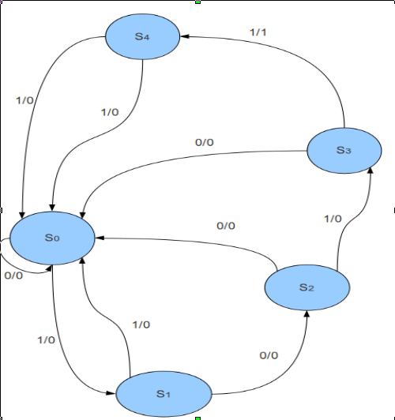
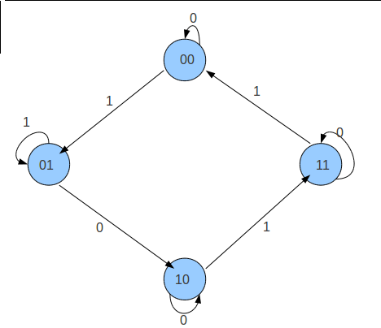

In a digital circuit, an Finite State Machine may be built using a programmable logic device, a programmable logic controller, logic gates and flip flops or relays. More specifically, a hardware implementation requires a register to store state variables, a block of combinational logic which determines the state transition, and a second block of combinational logic that determines the output of an Finte State Machine.

There are many applications where there is a need for our circuits to have "memory"; to remember previous inputs and calculate their outputs according to them. A circuit whose output depends not only on the present input but also on the history of the input is called a sequential circuit.
In this section we will learn how to design and build such sequential circuits.
In order to see how this procedure works, we will use an example.
So let's suppose we have a digital quiz game that works on a clock and reads an input from a manual button. However, we want the switch to transmit only one HIGH pulse to the circuit. If we hook the button directly on the game circuit it will transmit HIGH for as few clock cycles as our finger can achieve. On a common clock frequency our finger can never be fast enough.
Step 1
The first step of the design procedure is to define with simple but clear words what we want our circuit to do.Step 2
The next step is to design a State Diagram. This is a diagram that is made from circles and arrows and describes visually the operation of our circuit. In mathematic terms, this diagram that describes the operation of our sequential circuit is a Finite State Machine.A state Diagram
Every circle represents a "state", a well-defined condition that our machine can be found at.In the upper half of the circle we describe that condition. The description helps us remember what our circuit is supposed to do at that condition.
In the lower part of the circle is the output of our circuit. If we want our circuit to transmit a HIGH on a specific state, we put a 1 on that state. Ohterwise we put a 0.
Every arrow represents a "transition" from one state to another. A transition happens once every clock cycle. Depending on the current Input, we may go to a different state each time.
Step 3
Next, we replace the words that describe the different states of the diagram with binary numbers. We start the enumeration from 0 which is assigned always on the initial state. We then continue the enumeration with any state we like, until all states have their number.Step 4
Afterwards, we fill the State Table. This table has a very specific form.A State Table
The first columns are as many as the bits of the highest number we assigned the State Diagram.These columns describe the Current State of our circuit.To the right of the Current State columns we write the Input Columns. These will be as many as our Input variables.
Next, we write the Next State Columns. These are as many as the Current State columns.
Finally, we write the Outputs Columns. These are as many as our outputs.
Each row of the Next State columns is filled as follows: We fill it in with the state that we reach when, in the State Diagram, from the Current State of the same row we follow the Input of the same row. If we get to a row whose Current State number doesn't correspond to any actual State in the State Diagram we fill it with Don't Care terms (X). After all, we don't care where we can go from a State that doesn't exist. We wouldn't be there in the first place! Again it is simpler than it sounds.
The outputs column is filled by the output of the corresponding Current State in the State Diagram.
The State Table is complete! It describes the behaviour of our circuit as fully as the State Diagram does.
Step 5a
The next step is to take that theoretical "Machine" and implement it in a circuit. Most often than not, this implementation involves Flip Flops. This guide is dedicated to this kind of implementation and will describe the procedure for both D - Flip Flops as well as JK - Flip Flops. T - Flip Flops will not be included as they are too similar to the two previous cases. The selection of the Flip Flop to use is arbitrary and usually is determined by cost factors. The best choice is to perform both analysis and decide which type of Flip Flop results in minimum number of logic gates and lesser cost.We will need as many D - Flip Flops as the State columns.For every Flip Flop we will add one one more column in our State table with the name of the Flip Flop's input. The column that corresponds to each Flip Flop describes what input we must give the Flip Flop in order to go from the Current State to the Next State. For the D - Flip Flop this is easy: The necessary input is equal to the Next State. In the rows that contain X's we fill X's in this column as well.
Step 5b
We can do the same steps with JK - Flip Flops. There are some differences however. A JK - Flip Flop has two inputs, therefore we need to add two columns for each Flip Flop.Step 6
We are in the final stage of our procedure. What remains, is to determine the Boolean functions that determine the inputs of our Flip Flops and the Output. We will extract one Boolean funtion for each Flip Flop input we have. This can be done with a Karnaugh Map. The input variables of this map are the Current State variables as well as the Inputs.Step 7
We design our circuit. We place the Flip Flops and use logic gates to form the Boolean functions that we calculated. The gates take input from the output of the Flip Flops and the Input of the circuit.We have successfully designed and constructed a Sequential Circuit.Sequential Circuits can come in handy as control parts of bigger circuits and can perform any sequential logic task that we can think of.

- The objective of this experiment is to understand working of the state digram.
- Try to make circuit for following sequence in state digram(000,001,010,100,101,110,000) .


Digital Logic Design
This experiment is designed to simulate any digital logical circuit.Following are the instruction for building the circuit.The whole Applet consist of mainly four pannels i.e Left Pannel , Mid Pannel , Right Pannel and Top Pannel.
- Left Pannel
- Gate Combobox: So this combox box is used to select basic gates like and,or,exor,not,nor,nand ,exnor and connector .Once Gate is selected then corresponding number of inputs can be selected from the combo box adjacent to it.After clicking this you just have to click on mid pannel drawing area, and gate will be placed at that particular location.
- Probe:Generaly terminal output is shown by default, if you want explicitly Input and output of various node , then you have to probe it.
- None:It is used to get default cursor option back, so that you can do basic operation like drag and drop .
- Delete Element: This is used for explicitly deleting certain element. You just have to click on those element.
- Connect/Disconnect:This used for establishing and removing connection between various element. Connection can be established only from output to input.You have to first click to the output node then to the input node(consist of red square box) . For disconnection , also same procedure but this time you can start by clicking either of input or output node.
- Naming:This is used for giving name to either input or output node. Just click on the node, then one input box will pop out in which you can give the name.
- Output:Generally this is used for explicitly defining yhe output node. Its purpose will be more clear in explanation of import button.
- Time PulseYou have to enter time pulse in definate pattern i.e
: , , , and so on.For ex: 0,10,10,10,10 . After that press enter or click on the new timepulse. Then, it will be created and available as input in list box. - Binary One And ZeroThese are used to give value to terminal input and output
- Top Pannel
- Clear:It is used to clear every element on the circuit
- Save:It is used for saving the circuit as file which can be loaded and imported.
- Load:It load the save circuit as it is without any change. It would be fresh circuit with no previous value stored.
- Import:Now it is a very important feature. It is simmilar to load , but circuit will appear as black box with terminal input ,terminal output and those output which are set by the output button on left pannel. So, in this recursively you can make many circuit.The input and output nodes will come in order of top to bottom on the basis of there vertical position while saving.It is imported as geeneric element whose name is derived from saved file's name.
- Simulate:This is used to compute the whole circuit , if all the terminal inputs are present . It also compute the gate delays , which can be known by hovering the mouse over the gates. By default gate delay is kept to be -1. Simulation can fail or give ambiguous result if circuit do not stablizes with time. This generally happens in the case of improper construction of feedbacks. For ex : If You use direct feedback in flip flop it will give You wrong or no result , i.e why use master slave architecture to build flip flop.
- Mid Pannel:It is the just drawing area used for building various circuits.You can move various element in mid pannel by simple drag and drop.
- Right Pannel:It is used for showing time varying terminal inputs ,outputs and also probed input and output.It will have element name and input or output index associated with it. Indexes are given top to bottom.

1) A student was asked to design the state diagram of a circuit to detect 1011 occurs in a given input sequence. So, he came up with the following design.

a) What will be the sequence of states and outputs for the following input sequence 10101101011000
b) Does the circuit correctly solve the problem. Why/why not? If not then what should be the change in the state diagram?
2) Design a clocked sequential circuit for the following state diagram :

Use JK flip flops and combinational logic in the design. Import the flip flops as black boxes. There will be an input x to the circuit.
(HINT: Make excitation tables for J,K of the flip flops. The present state, and input x will be fed to combinational logic, which will generate J,K for each flip flop.)

- With The help of Theory Page , try to build the Circuit for given state digram.
- If You are unable to make it , load or export the circuit directly and use it
- Use Time variant input pulses to analyze the output

- State Diagrams - Wikipedia
- Finite State Machines - Wikipedia
- Chapter 6 : Sequential Logic, "Digital Logic and Computer Design" - M. Morris Mano